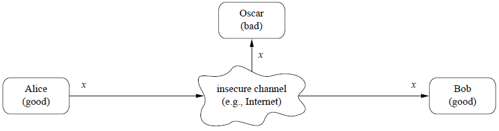

-
Cryptography
SECURITY
|________CRYPTOLOGY
| |____________CRYPTANALYSIS
| |____________CRYPTOGRAPHY
| |_____________SYMMETRIC CIPHERS
| |_____________ASYMMETRIC CIPHERS
| |_____________PROTOCOLS
|________...VARIOUS FIELDS
Cryptography = ensure confidentiality through encryption methods
Other objectives of Cryptography:
1. Data integrity. The receiver of a message should be able to check whether
the message was modified during transmission, either accidentally or deliberately.
No one should be able to substitute a false message for the original message, or for parts of it.
Both symmetric and public key methods are available to ensure data integrity.
Classical Symmetric methods require a secret key k that is shared by sender and receiver.
Message is augmented by message authentication code (MAC)
MAC is generated by an algorithm that depends on the secret key. Receiver may test the integrity.
2. Authentication. The receiver of a message should be able to verify its origin.
No one should be able to send a message to Bob and pretend to be Alice (data origin authentication).
When initiating a communication, Alice and Bob should be able to identify each other (entity authentication).
Digital Signatures requires public key methods. Digital signatures depend on the secret key of the signer
- they can be generated only by that person. On the other hand, anyone can check whether a signature
is valid, by applying a publicly known verification algorithm Verify, which depends on the public key of the signer.
Alice signs a message: s = Sign(sk, m)
Bob verifies the msg : Verify(pk, s, m) = ok?
3. Non-repudiation. The sender should not be able to later deny that she sent a message.
As with classical handwritten signatures, digital signatures are intended to provide authentication and non-repudiation
SYMM CIPHER: D(k,E(k,m)) = m for each plaintext m
ASYMM CIPHER: D(sk,E(pk,m)) = m, sk = private key; pk = public key

Transferring messages in an insecure channel.
x = plaintext or cleartext
y = ciphertext
k = key
key space = set of all possible keys
Question: Should we keep the algorithms (d() & e()) secret or public?
Best practice nowadays is to keep them public, and get tested by cryptographers.
What matters, and should be kept secret is the key.
Kerckhoffs¡¯ Principle:
The adversary knows all the details of the cryptosystem, including its algorithms and their implementations.
The security of a cryptosystem must be based entirely on the secret keys.
-
Attacks
Cryptanalysis = the science of studying attacks against cryptographic schemes
Attacks usually tries to reveal plaintext from ciphertext. Or even, recover the key.
Eve may have full information of plaintext or ciphertext. But may not have the key.
Classifications of Attacks:
1. Ciphertext-only attack: Eve have ciphertexts.
One must assume that she can get access to encrypted messages.
An encryption method that cannot resist a ciphertext-only attack is completely insecure.
2. Known-plaintext attack: Eve have plaintext-ciphertext pairs.
Using the information from these pairs, she attempts to decrypt a ciphertext for which she does not have the plaintext.
Messages may be sent in standard formats which Eve knows.
3. Chosen-plaintext attack: Eve has the ability to obtain ciphertexts for plaintexts of her choosing.
Then she attempts to decrypt a ciphertext for which she does not have the plaintext.
For example, she may send some interesting information to her intended victim which she is confident
he will encrypt and send out.
This type of attack assumes that Eve must first obtain whatever plaintext-ciphertext pairs she wants
and then do her analysis, without any further interaction.
This means that she only needs access to the encrypting device once.
4. Adaptively-chosen-plaintext attack.
This is the same as the previous attack, except that now Eve may do some analysis on the plaintext-ciphertext
pairs, and subsequently get more pairs.
She may switch between gathering pairs and performing the analysis as often as she likes.
This means that she either has lengthy access to the encrypting device or can somehow make repeated use of it.
5. Chosen- and adaptively-chosen-ciphertext attacks.
These two attacks are similar to the above plaintext attacks.
Eve can choose ciphertexts and get the corresponding plaintexts. She has access to the decryption device.
-
Cryptographic Protocols
encryption and decryption algorithms
cryptographic hash functions
pseudorandom generators
are the basic building blocks (also called cryptographic primitives) for solving problems
involving secrecy, authentication or data integrity.
In many cases a single building block is not sufficient to solve the given
problem: different primitives must be combined. A series of steps must be executed to accomplish a given task.
Cryptographic Protocols = Well-defined series of steps. e.g.
1. Bob randomly chooses a ¡°challenge¡± c and sends it to Alice.
2. Alice signs c with her secret key, s := Sign(sk, c), and sends the ¡°response¡± to Bob.
3. Bob accepts Alice¡¯s proof of identity if Verify(pk, s, c) = ok.
-
AES
X